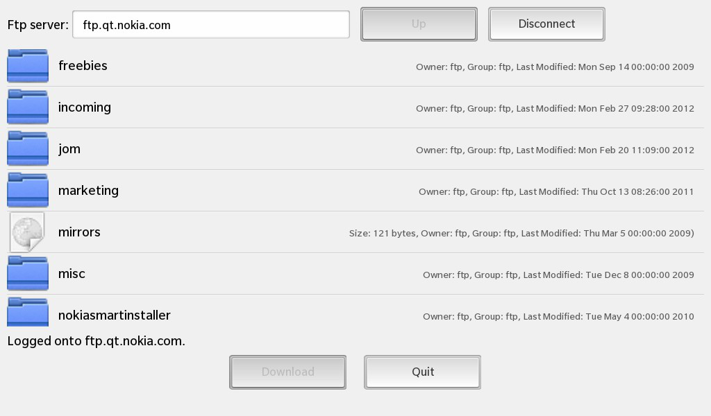

Files:
The FTP example demonstrates a simple FTP client that can be used to list the available files on an FTP server and download them.

The user of the example can enter the address or hostname of an FTP server in the text field, and then push the Connect button to connect to it. A list of the server's top-level directory is then presented in a list view. If the selected item in the view is a file, the user can download it by pushing the Download button. An item representing a directory can be touched to show the contents of that directory in the view.
The functionality required for the example is implemented in the QFtp class, which provides an easy, high-level interface to the file transfer protocol. FTP operations are requested through QFtp::Commands. The operations are asynchronous. QFtp will notify us through signals when commands are started and finished.
We have one class, FtpDownloader, which handles the FTP functionality and updates the GUI through exported properties. We will now go through its definition and implementation - focusing on the code concerning FTP. The code for managing the GUI is explained in other examples.
The FtpDownloader class provides the FTP functionality. The GUI itself is defined in a QML file; FtpDownloader changes the properties of some of the GUI's controls, such as the enabled state or the content of the list view. The slots of FtpDownloader are connected to its controls, and contain the functionality for managing the FTP connection. We also connect to signals in QFtp, which tells us when the commands we request are finished, the progress of current commands, and information about files on the server.
void FtpDownloader::connectOrDisconnect() { // This method is called whenever the user clicks on the 'Connect/Disconnect' button in the UI // If we are currently connected (we have a valid FTP client object), we'll disconnect if (m_ftp) { // Cleanup the FTP client object m_ftp->abort(); m_ftp->deleteLater(); m_ftp = 0;
We will look at each slot when we examine the FtpDownloader implementation in the next section. We also make use of a few private variables:
// Create a new FTP client object and connect to the signals for receiving status changes m_ftp = new QFtp(this); connect(m_ftp, SIGNAL(commandFinished(int,bool)), this, SLOT(ftpCommandFinished(int,bool))); connect(m_ftp, SIGNAL(listInfo(QUrlInfo)), this, SLOT(addToList(QUrlInfo))); connect(m_ftp, SIGNAL(dataTransferProgress(qint64,qint64)), this, SLOT(updateDataTransferProgress(qint64,qint64))); // Reset the model and current path before we start navigation on the FTP server m_model.clear(); m_currentPath.clear();
We use the QFile object to download files from the FTP server.
We move on to the slots, starting with connectOrDisconnect().
void FtpDownloader::connectOrDisconnect() { // This method is called whenever the user clicks on the 'Connect/Disconnect' button in the UI // If we are currently connected (we have a valid FTP client object), we'll disconnect if (m_ftp) { // Cleanup the FTP client object m_ftp->abort(); m_ftp->deleteLater(); m_ftp = 0;
If m_ftp is already pointing to a QFtp object, we QFtp::Close its FTP connection and delete the object it points to. Note that we do not delete the object using standard C++ delete as we need it to finish its abort operation.
...
// Create a new FTP client object and connect to the signals for receiving status changes
m_ftp = new QFtp(this);
connect(m_ftp, SIGNAL(commandFinished(int,bool)),
this, SLOT(ftpCommandFinished(int,bool)));
connect(m_ftp, SIGNAL(listInfo(QUrlInfo)),
this, SLOT(addToList(QUrlInfo)));
connect(m_ftp, SIGNAL(dataTransferProgress(qint64,qint64)),
this, SLOT(updateDataTransferProgress(qint64,qint64)));
// Reset the model and current path before we start navigation on the FTP server
m_model.clear();
m_currentPath.clear();
If we get here, connectOrDisconnect() was called to establish a new FTP connection. We create a new QFtp for our new connection, and connect its signals to slots in FtpDownloader. The listInfo() signal is emitted whenever information about a single file on the sever has been resolved. This signal is sent when we ask QFtp to list() the contents of a directory. Finally, the dataTransferProgress() signal is emitted repeatedly during an FTP file transfer, giving us progress reports.
// Connect to the FTP server (with credentials if available) and navigate to the given path const QUrl url(m_url); if (!url.isValid() || url.scheme().toLower() != QLatin1String("ftp")) { m_ftp->connectToHost(m_url, 21); m_ftp->login(); } else { m_ftp->connectToHost(url.host(), url.port(21)); if (!url.userName().isEmpty()) m_ftp->login(QUrl::fromPercentEncoding(url.userName().toLatin1()), url.password()); else m_ftp->login(); if (!url.path().isEmpty()) { m_currentPath = url.path(); if (m_currentPath.endsWith('/')) m_currentPath.chop(1); m_ftp->cd(m_currentPath); } }
The m_url contains the IP address or hostname of the server to which we want to connect. We first check that the URL is a valid FTP sever address. If it isn't, we still try to connect using the plain text in m_url. In either case, we assume that port 21 is used.
If the URL does not contain a user name and password, we use QFtp::login(), which will attempt to log into the FTP sever as an anonymous user. The QFtp object will now notify us when it has connected to the FTP server; it will also send a signal if it fails to connect or the username and password were rejected.
We move on to the downloadFile() slot:
void FtpDownloader::downloadFile() { // Retrieve the selected item from the directory listing ListView const QVariant data = m_model.data(m_currentIndexPath); if (!data.isValid()) { enableDownloadButton(); return; } const FtpItem currentItem = data.value<FtpItem>(); // Assemble the target file name for the download m_downloadFileName = currentItem.fileName; const QString diskFileName = "tmp/" + m_downloadFileName; ... // Try to open the target file and report an error if that's not possible m_file = new QFile(diskFileName); if (!m_file->open(QIODevice::WriteOnly)) { m_messageBoxController.exec(tr("FTP"), tr("Unable to save the file %1: %2.").arg(diskFileName).arg(m_file->errorString()), tr("Ok"), QString()); delete m_file; m_file = 0; return; } // Start the download of the selected item on the FTP server to the local target file m_ftp->get(m_downloadFileName, m_file); // Update the status properties to reflect the started download m_progressDialogController.setLabelText(tr("Downloading %1...").arg(m_downloadFileName)); m_downloadPossible = false; emit downloadPossibleChanged(); // Show the progress dialog m_progressDialogController.show(); }
We first fetch the name of the file, which we find in the selected item pointed to by m_currentIndexPath. We then start the download by using QFtp::get(). QFtp will send progress signals during the download and a signal when the download is completed.
void FtpDownloader::cancelDownload() { // If the user wants to cancel the download, tell the FTP client about it ... m_ftp->abort(); // ... and clean up the local target file if (m_file->exists()) { m_file->close(); m_file->remove(); } delete m_file; m_file = 0; }
QFtp supports canceling the download of files. We make sure that any file that is currently being written to is closed and removed, and tidy up by deleting the file object.
void FtpDownloader::ftpCommandFinished(int, bool error) { // This method is called whenever a FTP command has been processed by the FTP client if (m_ftp->currentCommand() == QFtp::ConnectToHost) { // If the connect failed, show an error dialog ... if (error) { m_messageBoxController.exec(tr("FTP"), tr("Unable to connect to the FTP server " "at %1. Please check that the host " "name is correct.").arg(m_url), tr("Ok"), QString()); connectOrDisconnect(); return; } // ... otherwise update status properties to reflect successful login. m_statusText = tr("Logged onto %1.").arg(m_url); emit statusTextChanged(); m_connectPossible = true; emit connectPossibleChanged(); return; }
The ftpCommandFinished() slot is called when QFtp has finished a QFtp::Command. If an error occurred during the command, QFtp will set error to one of the values in the QFtp::Error enum; otherwise, error is zero.
// After a successful login we immediately start with the directory listing if (m_ftp->currentCommand() == QFtp::Login) m_ftp->list();
After login, the QFtp::list() function will list the top-level directory on the server. addToList() is connected to QFtp::listInfo(), and will be invoked for each entry in that directory.
if (m_ftp->currentCommand() == QFtp::Get) { if (error) { // If the download failed, we update the status property ... m_statusText = tr("Canceled download of %1.").arg(m_downloadFileName); emit statusTextChanged(); // ... and clean up the local target file if (m_file) { m_file->close(); m_file->remove(); } } else { // If the download succeeded or was explicitly canceled, we just update the status property if (m_file) { const QFileInfo actualDir(*m_file); m_statusText = tr("Downloaded %1 to %2.").arg(m_downloadFileName).arg(actualDir.absolutePath()); emit statusTextChanged(); m_file->close(); } else { m_statusText = tr("Canceled download of %1.").arg(m_downloadFileName); emit statusTextChanged(); } } // Delete the target file object (Note: that does not delete the local file on the file system) delete m_file; m_file = 0; // Update the status properties enableDownloadButton(); // Hide the progress dialog m_progressDialogController.hide();
When a Get command is finished, a file has finished downloading (or an error occurred during the download).
} else if (m_ftp->currentCommand() == QFtp::List) { if (m_model.isEmpty()) { /** * If the model is empty after a directory listing, we add a not selectable dummy entry, so * that the user has some visual feedback for an empty directory. */ FtpItem item; item.fileName = tr("<empty>"); m_model.append(item); m_selectionPossible = false; emit selectionPossibleChanged(); } if (!m_currentPath.isEmpty()) { // Update the status property m_parentDirectoryAvailable = true; emit parentDirectoryAvailableChanged(); } }
After a List command is performed, we have to check if no entries were found (in which case our addToList() function would not have been called).
Let's continue with the addToList() slot:
void FtpDownloader::addToList(const QUrlInfo &urlInfo) { // Fill an FtpItem with the data from FTP directory listing ... FtpItem item; item.fileName = urlInfo.name(); item.fileSize = urlInfo.size(); item.owner = urlInfo.owner(); item.group = urlInfo.group(); item.time = urlInfo.lastModified(); item.isDirectory = urlInfo.isDir(); const bool wasEmpty = m_model.isEmpty(); // ... and append it to the model m_model.append(item); // If this is the first entry in the model, also update the status property if (wasEmpty) { m_selectionPossible = true; emit selectionPossibleChanged(); } }
When a new file has been resolved during a QFtp::List command, this slot is invoked with a QUrlInfo describing the file. We create a separate row for the file in m_model.
void FtpDownloader::processItem(const QVariantList &indexPath) { if (!m_selectionPossible) return; m_currentIndexPath = indexPath; enableDownloadButton(); if (!indexPath.isEmpty()) { // If the user has selected an valid item in the directory listing ListView, check whether it's a directory const FtpItem item = m_model.data(indexPath).value<FtpItem>(); if (item.isDirectory) { // In this case clear the content of the model ... m_model.clear(); // ... assemble the path for the selected subdirectory ... m_currentPath += '/'; m_currentPath += item.fileName; // ... and trigger a listing for this subdirectory m_ftp->cd(item.fileName); m_ftp->list(); // Update the status property m_parentDirectoryAvailable = true; emit parentDirectoryAvailableChanged(); return; } } }
The processItem() slot is called when an item is touched in the list view. If the item represents a directory, we want to load the contents of that directory with QFtp::list().
void FtpDownloader::cdToParent() { // If the user requests to go to the parent directory clear the model ... m_model.clear(); m_currentIndexPath.clear(); enableDownloadButton(); // ... extract the path to the parent directory ... m_currentPath = m_currentPath.left(m_currentPath.lastIndexOf('/')); // ... change to the parent directory ... if (m_currentPath.isEmpty()) { m_parentDirectoryAvailable = false; emit parentDirectoryAvailableChanged(); m_ftp->cd("/"); } else { m_ftp->cd(m_currentPath); } // ... and trigger a listing for the parent directory m_ftp->list(); }
cdToParent() is invoked when the user requests to go to the parent directory of the one displayed in the file list. After changing the directory, we QFtp::List its contents.
void FtpDownloader::updateDataTransferProgress(qint64 readBytes, qint64 totalBytes) { // Calculate the progress of the download in percent const float progress = readBytes / (float) totalBytes * 100.0f; // Update the progress information in the progress dialog m_progressDialogController.setProgress(progress); }
The updateDataTransferProgress() slot is called regularly by QFtp::dataTransferProgress() when a file download is in progress. We use a the progress dialog controller to show the download progression to the user. The progress dialog controller has properties that are bound to the UI elements' properties of the progress dialog in the QML file.
void FtpDownloader::enableDownloadButton() { // Check whether the currently selected directory listing entry can be downloaded const QVariant itemData = m_model.data(m_currentIndexPath); if (itemData.isValid()) { const FtpItem item = itemData.value<FtpItem>(); m_downloadPossible = !item.isDirectory; } else { m_downloadPossible = false; } emit downloadPossibleChanged(); }
The enableDownloadButton() is called whenever the selection in the list view changes. If the item represents a file, the download button should be enabled; otherwise, it is disabled.